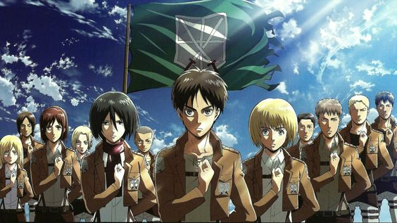

Attack On Titan: Konflik Politik dan Kehidupan
Posted By: Moreno Heber Fresa On May 9th, 2024 .
Anime "Attack on Titan" merupakan salah satu anime terpopuler pada saat ini. Anime ini tidak hanya menyajikan aksi dan petualangan yang seru, tetapi juga terdapat pesan-pesan moral dan politik. Salah satu tema politik yang paling menonjol dalam Attack on Titan adalah tentang propaganda dan manipulasi sejarah. Dalam anime ini, pemerintah di Pulau Paradis menyembunyikan kebenaran tentang asal-usul Titan dan dunia di luar tembok dari rakyatnya. Hal ini dilakukan untuk menjaga stabilitas dan kekuasaan mereka.
Propaganda dan manipulasi sejarah merupakan hal yang sering terjadi di dunia nyata. Pemerintah dan pihak-pihak yang berkuasa sering menggunakan hal ini untuk melegitimasi kekuasaan mereka dan mengontrol rakyatnya. Attack on Titan mengajarkan kita untuk berhati-hati terhadap propaganda dan manipulasi sejarah. Kita harus selalu kritis terhadap informasi yang kita terima, dan tidak mudah percaya pada apa yang dikatakan oleh pemerintah atau pihak-pihak yang berkuasa.
Selain propaganda dan manipulasi sejarah, Attack on Titan juga mengangkat tema-tema politik lain yang penting, seperti rasisme, imperialisme, dan perang. Anime ini menunjukkan bagaimana hal-hal tersebut dapat menyebabkan konflik dan penderitaan bagi umat manusia.
Pelajaran Politik dari Attack on Titan
- Pentingnya memahami sejarah yang sebenarnya. Karena propaganda dan manipulasi sejarah dapat menyebabkan kita memiliki pemahaman yang keliru tentang dunia.
- Kita harus kritis terhadap informasi yang kita terima. Jangan mudah percaya pada apa yang dikatakan oleh pemerintah atau pihak-pihak yang berkuasa.
- Rasisme, imperialisme, dan perang dapat menyebabkan konflik dan penderitaan. Kita harus berjuang untuk menciptakan dunia yang lebih adil dan damai.
Salah satu peristiwa paling kontroversial dalam Attack on Titan adalah genosida yang dilakukan oleh Eren Yeager. Eren adalah karakter utama dalam anime ini, dan dia adalah seorang Titan Shifter. Di akhir season keempat, Eren menggunakan kekuatannya untuk menghancurkan dunia di luar tembok. Hal ini menyebabkan kematian jutaan orang, termasuk orang-orang yang tidak bersalah. Genosida yang dilakukan oleh Eren menimbulkan pertanyaan moral yang kompleks. Apakah Eren benar dalam melakukan hal tersebut? Apakah dia dibenarkan untuk membunuh jutaan orang untuk menciptakan dunia yang bebas bagi orang-orang di Pulau Paradis?
Ada beberapa argumen yang mendukung Eren. Argumen pertama adalah bahwa Eren melakukan hal tersebut untuk melindungi orang-orang di Pulau Paradis. Dia percaya bahwa dunia di luar tembok akan selalu mengancam Pulau Paradis, dan dia ingin memastikan bahwa orang-orangnya aman. Argumen kedua adalah bahwa Eren melakukan hal tersebut untuk mengakhiri perang. Dia percaya bahwa perang dan konflik adalah hal yang tidak dapat dihindari, dan dia ingin menciptakan dunia yang damai.
Namun, ada juga beberapa argumen yang menentang Eren. Argumen pertama adalah bahwa Eren adalah seorang pembunuh. Dia telah membunuh jutaan orang, termasuk orang-orang yang tidak bersalah. Argumen kedua adalah bahwa Eren tidak dapat menjamin bahwa dunia akan menjadi bebas setelah dia menghancurkannya. Dia mungkin hanya menciptakan dunia baru yang penuh dengan konflik dan penderitaan.
Pada akhirnya, apakah Eren benar dalam melakukan genosida adalah pertanyaan yang sulit untuk dijawab. Ada argumen yang mendukung dan menentang Eren, dan setiap orang harus membuat penilaian mereka sendiri. Namun, Attack on Titan mengajarkan kita bahwa genosida adalah tindakan yang mengerikan dan tidak dapat dibenarkan. Genosida tidak pernah menjadi jawaban, dan selalu ada cara lain untuk menyelesaikan konflik.
Sumber Informasi: kompasiana.com